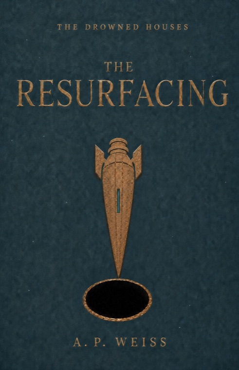
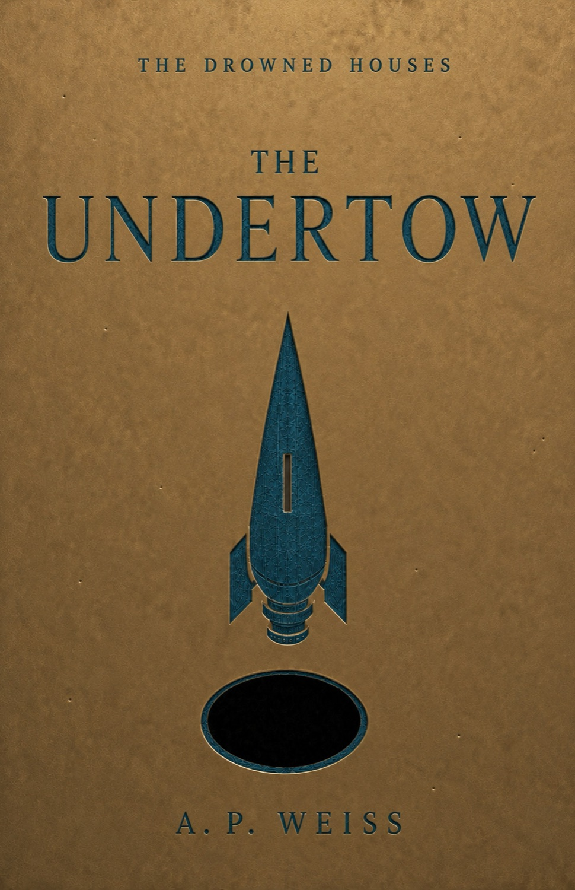
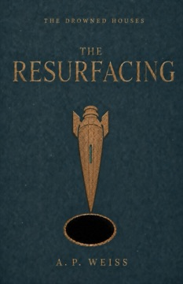
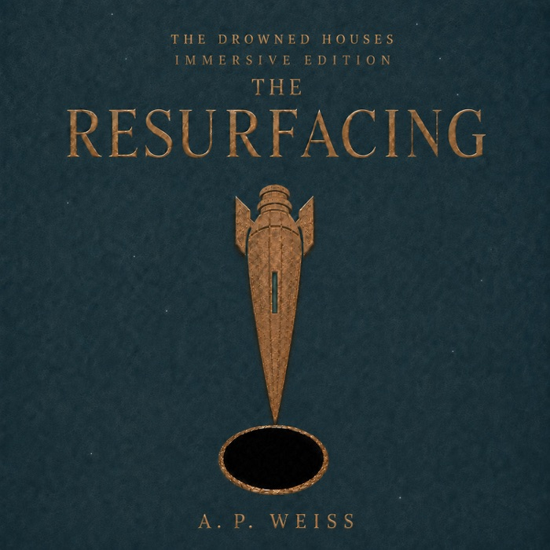

A duology by A. P. Weiss
The Drowned Houses
The dead are not gone. Only slow.
See the book at Orb & InkBook One · The ResurfacingInstrument at rest · this page is being read without its clock
- In the Amaranth Reach, the great houses do not die.
- They sink toward the Well, to where one year of theirs is a century above.
- From there they rule the living, by letters that arrive generations late.
↑Book One
The Resurfacing
House Vhast was driven down nine hundred years ago and presumed extinct past the Threshold. It has just climbed out — young, rich beyond audit, and holding a claim to half the Reach.
About this book
The Stair of Years
Descent is rank. The deeper a patriarch holds, the slower his clock runs: a year of his is a century above.
×1the surface ×22 years above ×55 years above ×2020 years above ×100a century above
Sinking is holy.
400years between the day a deep letter was dated and the day it was read. It was obeyed anyway.
↓Book Two
The Undertow
The transmission is answered. What comes back up is not what was sent down.
About this book
Heaven is the horizon.
The Undertow · the creed of the deep
The Threshold · past this line, no reply is expected
Surfacing is priced.
The surface, later.
Start with Book One.
Read it, or listen.

E-bookComing- PaperbackComing
- HardcoverComing
 AudiobookComing
AudiobookComing
Immersive audiobookBook OneComing Audio dramaComing
Audio dramaComing